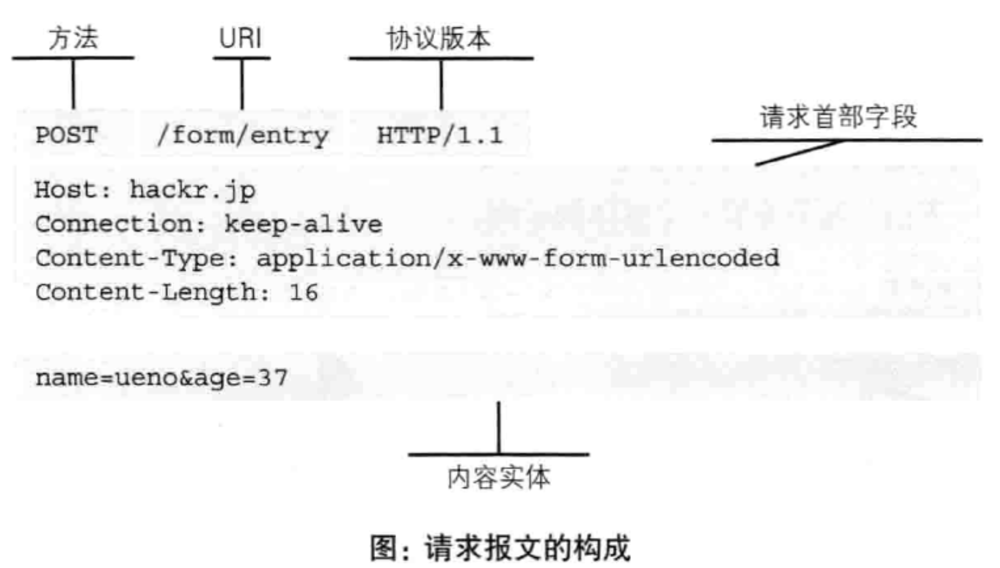
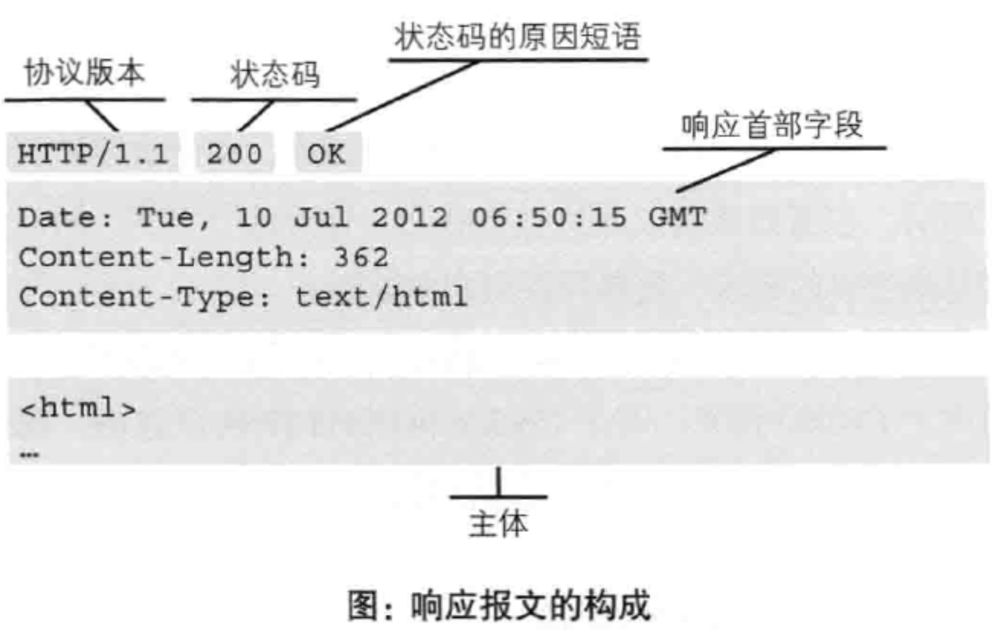
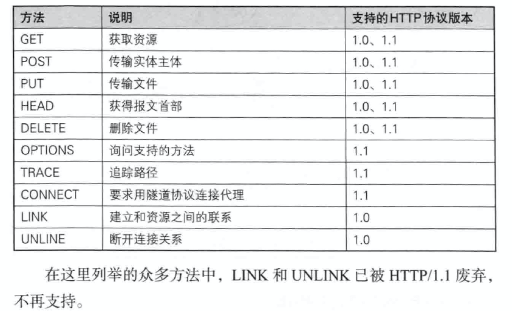
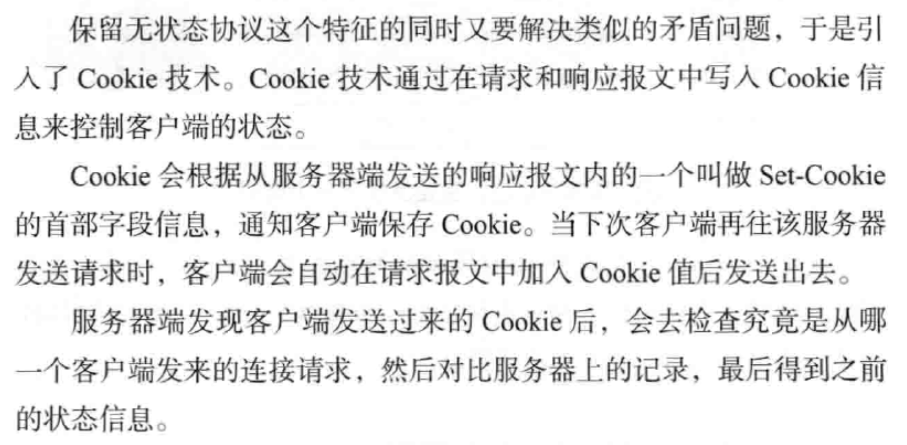
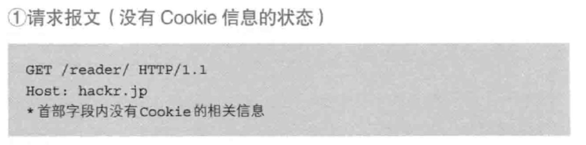
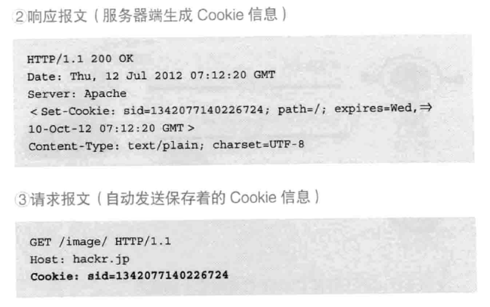

[TOC]
了解web及网络基础
HTTP
（HyperText Transfer Protocol）
- 通常使用的网络协议是TCP/IP 协议族上运作的，HTTP是其内部的一个子集
- TCP/IP 分层好处：把各层之间的接口设计好，其内部就可以自由改动
TCP/IP协议分层
| 分层 | 作用 | 备注 |
|---|---|---|
| 应用层 | 决定了向用户提供应用服务时通信的活动 | |
| 传输层 | 对上层应用层，提供处于网络连接中两台计算机的数据传输 | 有两个性质不同的协议TCP、 UDP |
| 网络层（网络互联层） | 处理在网络上流动的数据包 （数据包是网络传输的最小单位） 规定了通过怎样的路径到达对方计算机，并把数据包传送给对方 |
|
| 链路层（数据链路层/网络接口层） | 处理连接网络的硬件部分 |
IP（Internet Protocol）
- 位于网络层
- 作用：把各种数据包传送给对方
- 重要条件
IP地址：指明了节点被分配到的地址
MAC地址：指网卡所属的固定地址
IP地址可以和MAC地址配对，IP可变换，MAC地址基本不会改变
ARP协议
IP间的通信依赖MAC地址
ARP是一种用以解析地址的协议，根据通信方的IP地址就可以反查出对方的MAC地址
TCP协议
- 提供可靠的字节流服务
为了方便传输，将大块数据分割成以报文段（segment）为单位的数据包进行管理
能够把数据准确可靠的传送给对方
- 为了更容易传送大数据才把数据分割，而且TCP协议能够确认数据最终是否到达对方
- 为了准确无误把数据送达对方，采用了三次握手策略
DNS（Domain Name System）
DNs协议提供从域名查找IP，或逆向从IP反查域名的服务
URI（统一资源标识符）
用字符串标识某一互联网资源
URI格式
URL
表示资源的地点
简单的HTTP协议
请求报文构成

响应报文构成

HTTP是无状态协议
对发送过的请求或响应不做持久化处理
为了期望保持状态功能，引入了cookie技术
HTTP方法

- HTTP/1.1的PUT/DELETE方法不带验证机制，任何人都可以上传文件，存在安全问题，一般网站不使用该方法，若配合web应用程序的验证机制，或架构设计采用REST标准的同类web网站，则可能开放使用PUT/DELETE方法
持久连接（HTTP keep-alive）
持久连接的好处在于：减少了tcp连接的重复建立和断开所造成的额外开销，减轻了服务器的负载
在HTTP/1.1中，默认都是持久连接
持久连接使得多数请求以管线化方式发送成为可能，不用等待响应亦可发送下一个请求。能够做到同时并行发送多个请求
使用cookie的状态管理

cookie交互场景下，请求报文与响应报文


编码提升传输速率
- 常见的编码方式
- gzip
- compress
- deflate
- identity（不进行编码）
获取部分内容的范围请求
使用首部字段的Range来指定资源的byte范围
5001 ～ 10000 字节
1 | Range: bytes=5001-10000 |
- 从5001字节之后全部的
1 | Range: bytes=5001- |
- 从一开始3000字节和5000-7000字节的多重范围
1 | Range: bytes=-3000,5000-7000 |
内容协商返回最合适的内容
内容协商机制是指客户端和服务器端就响应的资源内容进行交涉，然后提供给客户端最为合适的资源
内容协商技术类型
服务器驱动协商
客户端驱动协商
透明协商
返回结果的HTTP状态码
状态码分类
| 状态码 | 类别 | 原因短语 |
|---|---|---|
| 1xx | Informational（信息性状态码） | 接收的请求正在处理 |
| 2xx | Success（成功状态码） | 请求正常处理完毕 |
| 3xx | Redirection（重定向状态码） | 需要进行附加操作以完成请求 |
| 4xx | Client Error（客户端错误状态码） | 服务器无法处理请求 |
| 5xx | Server Error（服务器错误状态码） | 服务器处理请求出错 |
2xx
| 状态码 原因短语 | 简单说明 |
|---|---|
| 200 OK | Informational（信息性状态码） |
| 204 No Content | 请求处理成功，但没有资源返回 |
| 206 Partial Content | Redirection（重定向状态码） |
3xx
| 状态码 原因短语 | 简单说明 |
|---|---|
| 301 Moved Permanently | 资源URL已经更行 |
| 302 Found | 请求处理成功，但没有资源返回 |
| 303 See Other | 客户端应当采用GET方法获取资源 |
| 304 Not Modified | 资源已找到，但未符合条件请求 |
| 307 Temporary Redirect | 临时重定向 |
4xx
| 状态码 原因短语 | 简单说明 |
|---|---|
| 400 Bad Request | 请求报文中存在语法错误 |
| 401 Unauthorized | 请求需要有通过HTTP认证的认证信息 |
| 403 Forbidden | 访问被服务器拒绝 |
| 404 Not Found | 服务器上未找到资源 |
5xx
| 状态码 原因短语 | 简单说明 |
|---|---|
| 500 Internal Server Error | 服务器在执行请求时发生了错误 |
| 503 Service Unavailable | 服务器处于超负荷或停机维护状态，无法处理请求 |
HTTP 协作的web服务器
代理
- 使用代理服务器的理由
利用缓存技术，减少网络带宽的流量
组织内部对特定网站的访问控制
以获取访问日志为主要目的
代理按两种基准分类：一种是是否使用缓存，另一种是是否会修改报文
缓存代理
预先将资源缓存在代理服务器上
- 透明代理
不对报文做任何加工
网关
- 使通信线路上的服务器提供非http协议服务
- 提高通信安全性，在客户端和网关的通信线路上加密以确保连接安全
隧道
- 建立起与其它服务器的通信线路
HTTP首部
- 首部内容较多
- 后续学习会补上相关笔记
确保安全的HTTPS
HTTP的缺点和不足
通信使用明文（不加密），内容可能会被窃听
不验证通信方的身份，因此有可能遭遇伪装
无法证明报文的完整性，所以有可能已遭篡改
- TCP/IP是可能被窃听的网络
防窃听保护信息的几种对策
通信的加密
通过和SSL或TSL的组合使用（HTTPS），加密HTTP的通信内容
内容的加密
HTTPS是身披SSL外壳的HTTP
HTTPS:只是HTTP通信接口部分用SSL和TSL协议代替而已
HTTP安全通信机制
- 待整理完成